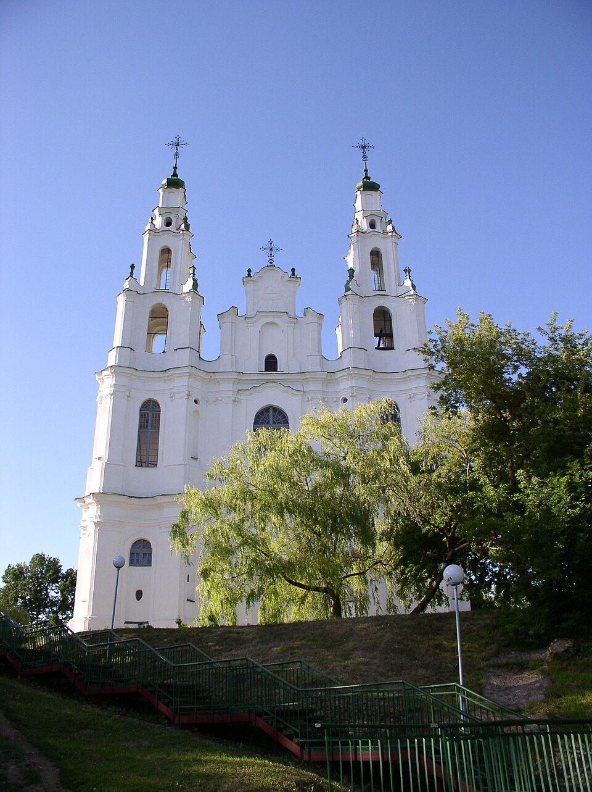
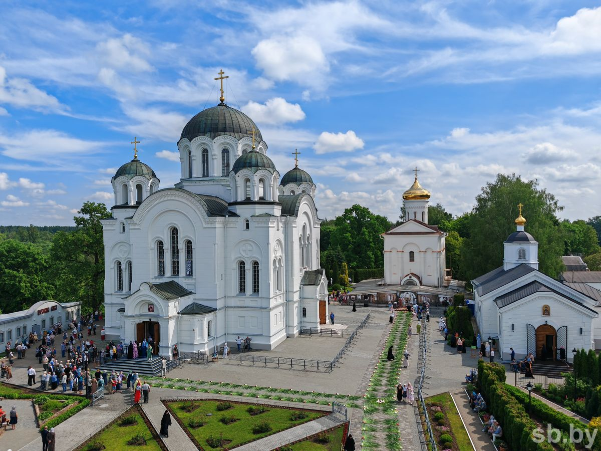
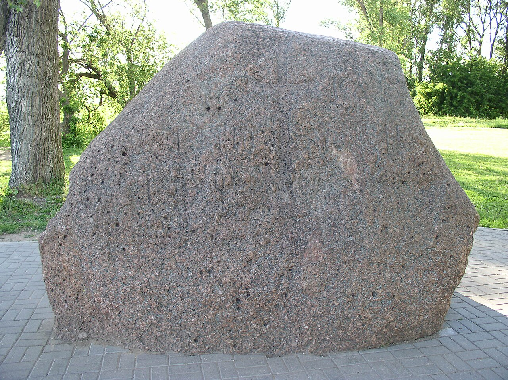

История белорусской государственности
Первые государственные образования на территории Беларуси
Полацкае і Тураўскае княствы: как распад единой Руси, выбор веры и связи с соседями создали основу белорусской государственности.
Скаженик Вера Александровна
Один сюжет в трёх частях
Крещение Руси
988 г. — цивилизационный выбор: вера, письменность и церковные центры, ставшие основой для земель Полоцка и Турова.
Феодальная раздробленность
XI–XIII вв. — как единая Русь распалась на самостоятельные земли: Полоцкую, Туровскую, Смоленскую.
Система международных отношений
XI–XIII вв. — как эти земли жили среди Византии, Скандинавии, Польши, Венгрии, Балтики и степи.
Нить рассказа. Доклад идёт по хронологии: сначала выбор 988 г., затем последовавший за ним распад единой державы (1054, 1097, 1132) и, наконец, место самостоятельных земель в системе соседей. Каждая часть вытекает из предыдущей: вера и книжность дали землям основу, раздробленность превратила их в княжества, а внешние связи показали их вес в Европе.
Выбор мира, а не только веры
988 г. Князь Владимир Святославич принял христианство по византийскому обряду (в Корсуне, брак с Анной, сестрой императоров Василия II и Константина VIII) и крестил Русь. По летописной легенде он выбирал между верами; реально выбирался круг союзов и культурная модель.
Что дал выбор
- Кириллическая письменность и книги
- Церковная организация (Киевская митрополия)
- Византийское право и архитектура
- Идея общего «рода» русских земель
Почему «цивилизационный»
- Русь стала частью византийско-православного мира
- После раскола 1054 г. осталась в его орбите, но связи с Западом сохранились
- Мировоззрение, календарь, образование — единая матрица
На белорусских землях: христианство пришло на рубеже X–XI вв.; в Полоцке — епархия, Софийский собор (XI в.), в Турове — епархия по традиции около 1005 г. Процесс был долгим: языческие верования держались веками.

Вера строит собственные центры
Евфросиния Полоцкая
Ок. 1104–1167. Основала Спасо-Преображенский монастырь, скрипторий, школу. Заказала знаменитый крест (1161), мастер — Лазарь Богша. Символ духовной зрелости Полоцка.
Кирилл Туровский
Ок. 1130–1182. Епископ, автор проповедей и молитв, «белорусский Златоуст». Туровское Евангелие XI в. — один из древнейших письменных памятников на белорусских землях.
Борисовы камни
Валуны XII в. с надписями кириллицей на Западной Двине. Это память о князе Борисе, вера и власть здесь записаны в одном знаке.


Связь с дальнейшим: общая вера объединяла земли в одну Русь, но собственные епархии и соборы одновременно закрепляли самостоятельные центры силы — так готовилась раздробленность.
Что это и откуда взялась
Феодальная раздробленность — этап политической децентрализации, когда единое государство распадается на фактически самостоятельные земли и княжества со своим князем, дружиной, вече и боярством. Это закономерная стадия развития феодализма в Европе (Франция, Германия, Польша после 1138 г.). Для Руси традиционная точка отсчёта — 1132 г., смерть Мстислава Великого; по этапам: 1054 (смерть Ярослава Мудрого), 1097 (Любечский съезд), 1132.
Династическая
Лествичное право: князья переходят с «стола» на «стол» по старшинству. Любеч (1097) закрепил принцип: «каждый да держит отчину свою».
Экономическая
Натуральное хозяйство: земли жили автономно, собственный центр — город с ремеслом и торговлей.
Социальная
Рост городов и боярства: местная знать заинтересована в «своём» князе, а вече ограничивает его власть.
Территориальная
Огромное пространство и слабые коммуникации делали управление из Киева всё менее эффективным.
Внешняя
Половецкая угроза, упадок пути «из варяг в греки», а после 1204 г. (разгром Константинополя) — ослабление главного торгового партнёра.
Политическая
Борьба Рюриковичей за Киев показала: сильная земля может обойтись без него. Центр потерял монополию.
Земля важнее центра
Полоцкая земля
Возникла на землях кривичей, впервые в летописи — 862 г. Княжил Рогволод; после него — Изяслав (сын Рогнеды), ветвь Изяславичей. Расцвет — Брячислав и Всеслав Чародей (1044–1101). После 1101 г. земля делится между сыновьями Всеслава: выделяются Минское, Витебское, Друцкое, Изяславское, Городенское и другие уделы.
Туровская земля
Земля дреговичей на Припяти; Туров назван в летописи под 980 г. Первый князь — Святополк, затем Изяслав Ярославич. Позже от неё отделяются Пинское, Слуцкое, Клецкое, Дубровицкое княжества. Туровские князья часто зависели от Киева.
Другие центры
Смоленское княжество, Берестье (самостоятельного княжества не сложилось), Новогрудок — позднее центр новой силы.
Последствия — позитивные
- Рост городов, ремесла, торговли
- Развитие местной письменности и архитектуры
- Формирование региональной идентичности
- Опыт самостоятельной политики: вече, князь, боярство
Последствия — негативные
- Дробление уделов, междоусобицы
- Ослабление обороны перед внешними силами (Орден, монголы, Литва)
- Утрата былого могущества Полоцка
- Рост роли вече при слабой княжеской власти
Связь: именно раздробленность создала условия, в которых земли позднее вошли в состав Великого княжества Литовского (Полоцк — ок. 1307 г.).
Русь в XII веке: земли и княжества

Как читать карту
Найдите Полоцкую и Туровскую земли, Смоленск и Берестье, мелкие уделы — Минск, Витебск, Городен. Видно, что на месте единой державы стоит мозаика земель.
Достоверность
Карта подписана как «Русь в 1113–1194 гг.» (период после Мономаха до конца XII в.). Основа — данные OpenStreetMap, автор указан. В описании файла и в статьях проекта фигурируют Минское, Витебское, Городенское, Туровское и другие княжества. Границы условны: летописи не дают точных линий, и у разных авторов они отличаются.
Что проверять при защите
Сверяйте названия княжеств и даты с учебником «История Беларуси» (6 кл.), § 10–11, и статьёй П. Ф. Лысенко о Туровском княжестве. Расхождения в границах — норма, называйте карту схемой.
Земли на перекрёстке путей
Византия
Вера, книги, мастера. Путь «из варяг в греки» по Днепру и Двине.
Скандинавия
Рогволод пришёл «из-за моря»; династические браки: Ярослав Мудрый и Ингигерда.
Польша и Венгрия
Браки и союзы Рюриковичей, походы Изяслава Ярославича в Польшу.
Балтика
Полоцк брал дань с ливов и летголов по Западной Двине; договор Полоцка с Ригой (ок. 1210); Смоленская торговая правда (1229).
Земли Беларуси
Полацкае, Тураўскае, Смаленскае княствы и уделы
Орден меченосцев
С 1202 г. в Прибалтике; новая угроза для Полоцка и соперник за Двину.
Степь
Половцы: набеги и союзы в междоусобицах князей.
Литва
С XIII в. становится центром объединения земель.
Вывод
Земли были не окраиной, а активным участником: торговля, династии, война.
От раздробленности к собственной традиции
Выбор (988)
Общая вера и письменность стали основой для центров в Полоцке и Турове.
Раздробленность (XI–XIII вв.)
Распад единой Руси превратил волости в самостоятельные земли.
Место в системе
Земли встроились в сеть торговых и династических связей Европы.
Для обсуждения
- Была ли раздробленность слабостью или условием самобытности?
- Почему Полоцк сохранял независимость от Киева дольше Турова?
Источники
- Повесть временных лет
- Лысенко П. Ф. Туровское княжество (X–XIII вв.) // Вестник НАН Беларуси, 2018, № 1, с. 40–49
- История Беларуси, 6 кл. (eior.by), § 10–11
- Карта: Ю. Корьяков, Wikimedia Commons, CC BY-SA 2.5